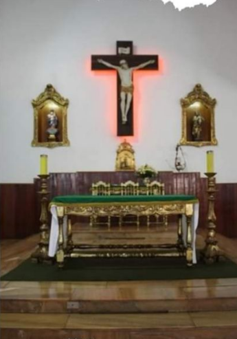
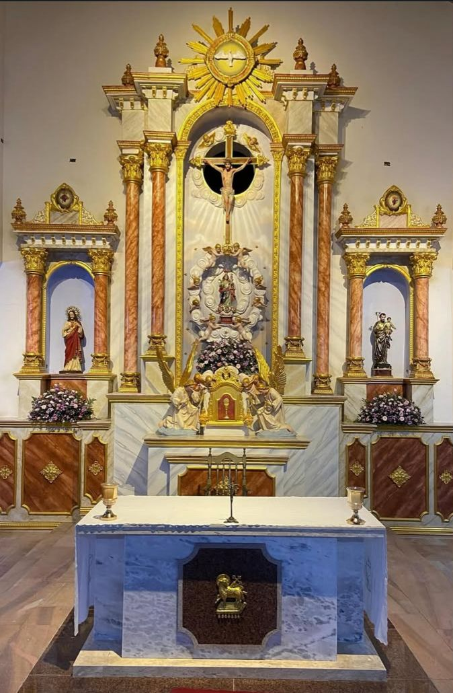
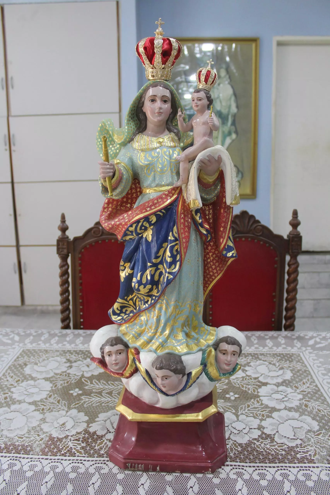

Santa Missa
19h Matriz do Livramento
19h Matriz do Livramento
Transmissões ao Vivo
Acompanhe de onde estiver
Todas as celebrações às 19hAssista à última celebração diretamente aqui ou acompanhe em tempo real pelo canal oficial do Youtube.
Acessar Canal YoutubeHistória da Igreja
A Paróquia de Nossa Senhora do Livramento em Arcoverde foi criada em 21 de agosto de 1919 por Dom José Antônio de Oliveira Lopes, desmembrada da Diocese de Pesqueira. Com raízes na devoção iniciada em 1865 com uma imagem vinda de Portugal, a paróquia cresceu junto com a cidade, sendo fundamental na fé local.
- Origem da Devoção: A veneração a Nossa Senhora do Livramento começou com uma imagem trazida de Portugal por um fazendeiro em 1865, instalada na antiga Fazenda Olhos d'Água dos Bredos.
- Criação Oficial: A freguesia foi oficialmente criada em 21 de agosto de 1919, sob decreto de Monsenhor D. José Antônio de Oliveira Lopes.
- Igreja Matriz: Em 1920, a igrejinha era simples, sem bancos, e evoluiu ao longo do século, tornando-se a paróquia central da cidade, que mais tarde mudou de nome para Arcoverde.
- Centenário: A paróquia celebrou seus 100 anos de criação com uma peregrinação da réplica da imagem em 2019, destacando a forte religiosidade local.
- Padroeira: Nossa Senhora do Livramento é a padroeira de Arcoverde, com a festa principal celebrada em 23 de setembro.
Sobre o Primeiro Altar: Pelo estilo, a Missa era celebrada com o celebrante de costas para a assembleia, conforme a antiga liturgia em latim.
A Reforma Litúrgica
Posteriormente, houve a Reforma do Altar Principal para acompanhar as diretrizes da nova liturgia do Vaticano II. O altar tornou-se mais simples, permitindo que o celebrante ficasse de frente para a assembleia, fazendo toda a celebração em língua portuguesa.

SEGUNDO ALTAR (PÓS-REFORMA)
ALTAR MOR ATUALO Novo Altar Mor
Com alguns detalhes a serem ajustados e finalizados, apresentamos oficialmente o novo Altar Mor da Paróquia Nossa Senhora do Livramento.
Esta nova fase representa o resgate da imponência sacra, unindo a tradição estética com a funcionalidade litúrgica atual, servindo como o novo coração espiritual de nossa comunidade.
Nossa Padroeira

Nossa Senhora do Livramento
"Mãe que nos livra de todos os males"
A devoção à Virgem do Livramento é o pilar que sustenta a fé do povo de Arcoverde há mais de 150 anos. Ela não é apenas uma imagem, mas o símbolo da proteção divina sobre nossa cidade.
- Festa Litúrgica: Celebrada solenemente no dia 23 de Setembro.
- Significado: Representa o auxílio cristão nos momentos de aflição, perigo e pedidos de libertação.
- Tradição: A procissão de encerramento é um dos maiores eventos religiosos do Sertão de Pernambuco.
Hino à Padroeira
Ó Senhora do Livramento, vossos filhos,
Benigna amparai, e na hora do vil tormento,
nossa fé vinde e confortai.
Vinde ó mãe querida, vinde nos socorrer.
As lutas desta vida, ó mãe dai-nos vencer.
Ao vosso meigo filho, mãe nos apresentai.
De nossos vis pecados, o perdão alcançai.
Na hora derradeira, dai-nos vosso Jesus.
Que alegre nos receba, lá na eterna luz.
Nosso Pároco
Pe. Adeildo Sebastião Ferreira
Pároco da Paróquia Nossa Senhora do Livramento
Responsável pela condução espiritual da comunidade, celebrações e atividades pastorais da paróquia.
Galeria de Fotos
Dízimo e Ofertas
Ajude nossa Paróquia
Sua contribuição sustenta nossas obras de evangelização, projetos sociais e a manutenção da Igreja Matriz.
Agência: 0915 | Operação: 003
Conta Corrente: 2898-2
Favorecido: Paróquia N. Sra. do Livramento
Aponte a câmera para doar via App
Contato
Endereço
Praça do Livramento
N° 17 - Centro
CEP: 56505-250
Arcoverde - PE